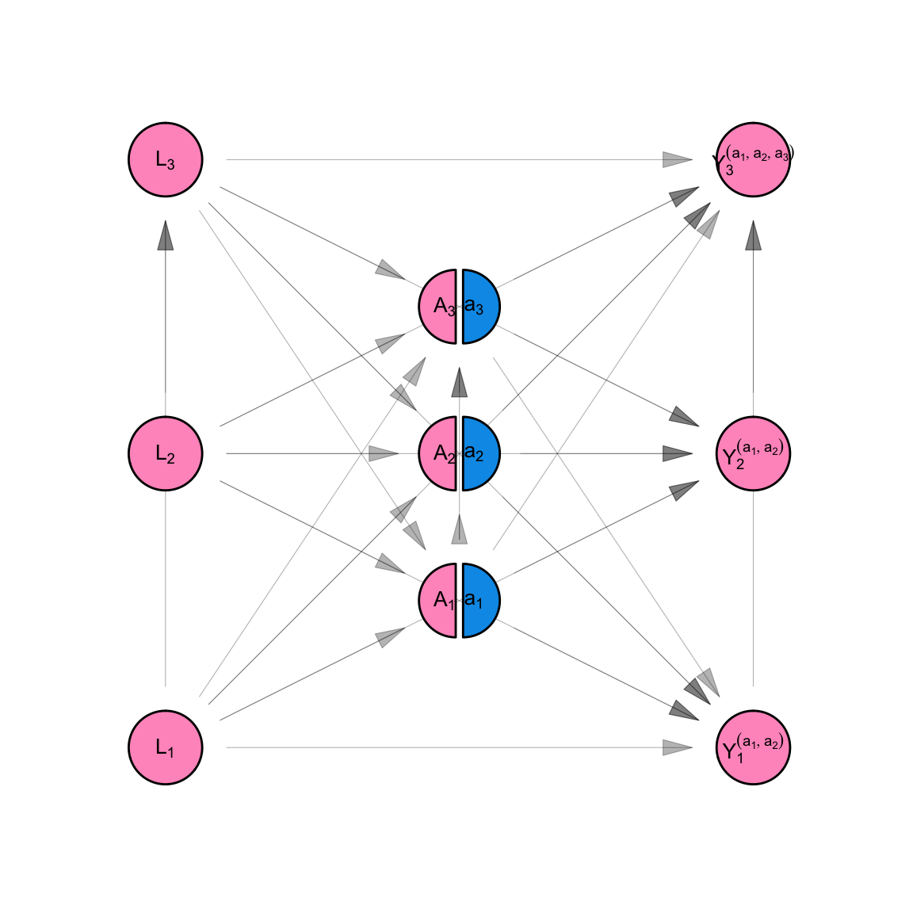
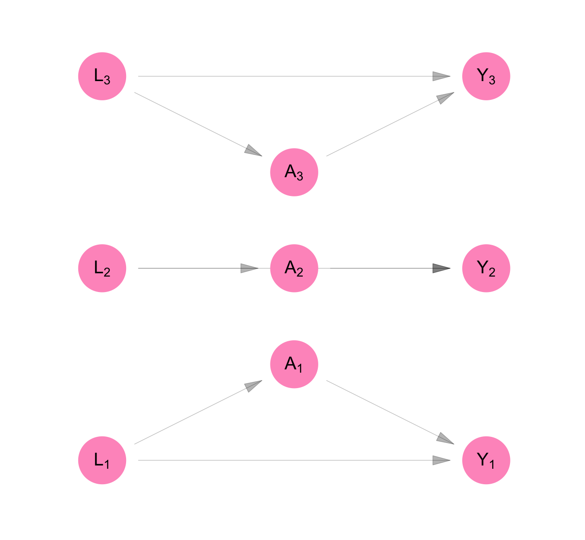
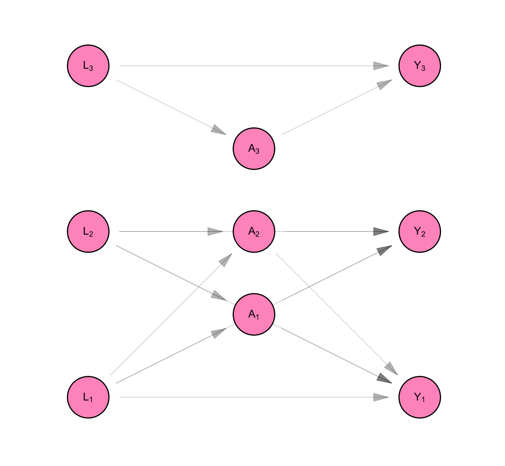
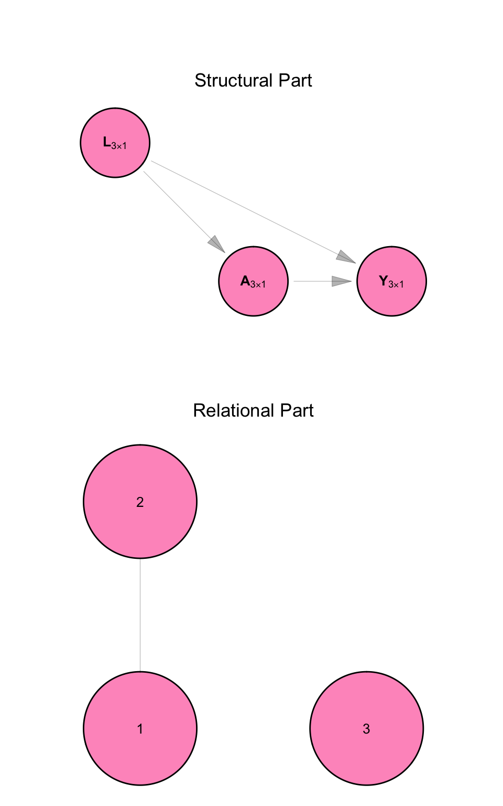
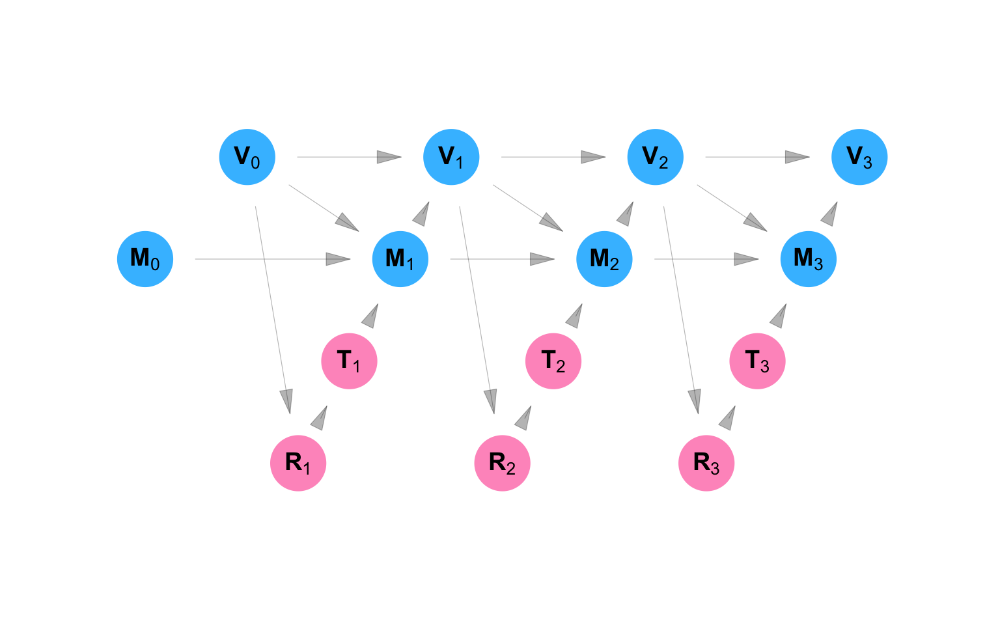
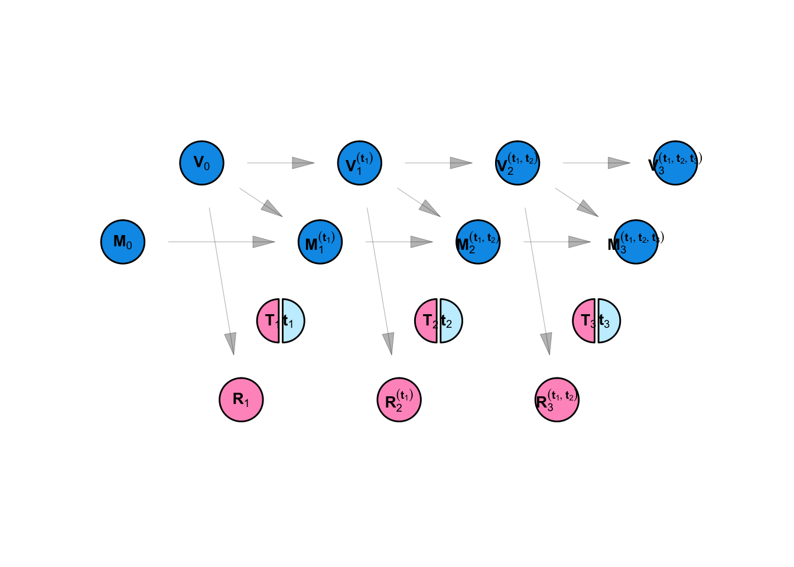

Code
plot_icon(icon_name = "droplets", color = "dark_purple", shape = 0)
We summarize the leading approach to causal inference in epidemiologic studies, extending that approach to accommodate data which are characterized by complex patterns of interdependence.
Acknowledgements: The statistical framework for SSNAC was first presented at the Society for Epidemiologic Research Meeting (Boston, June 2025) at a workshop titled “Single World Intervention Graphs (SWIGs) for the practicing epidemiologist” organized and taught by Aaron Sarvet (University of Massachusetts), Mats J. Stensrud (École polytechnique fédérale de Lausanne), and Kerollos Wanis (University of Texas), and also taught by Keletso Makofane (Ctrl+F), James M. Robins (Harvard University), and Thomas Richardson (University of Washington).
Lead author: Keletso Makofane, MPH, PhD. Editor: Nicholas Diamond, MPH. (Published: June 2025).
plot_icon(icon_name = "droplets", color = "dark_purple", shape = 0)
The Social and Spatial Network Analysis with Causal interpretation framework can be used to guide the collection, management, analysis, and causal interpretation of data. It offers guidance on conceptualizing and organizing spatial and social data as networks (Appendix A) and provides tools for descriptive and causal analysis (Appendix C).
We define SSNAC as a set of straight-forward extensions of the currently dominant framework for conducting causal inference with observational data in epidemiology. We begin by giving an overview of the dominant approach, which we will call “classic causal inference”. We extend this system to situations where data are characterized by interdependence of observational units rather than independence, naming this system “social network analysis with causal interpretation”. Finally, we accommodate social and spatial data simultaneously in the SSNAC framework. In each case, we describe the assumptions and implications of each system, illustrating with worked examples.
We re-frame the task of statistical inference from that of learning from a growing collection of identically distributed random vectors to that of learning from a growing random vector whose entries are related through a causal structure… These [SSNAC] assumptions allow our estimates to benefit from having more observational units, even if they collectively contribute to one realization of the statistical model.
Classic causal inference, as elaborated by Robins (1986), Hernán and Robins (2021), and others helps us to sharpen epidemiologic reasoning by providing a template for conducting thought experiments about population health. Typically in these thought experiments, the researcher reasons about the likely effect of some hypothetical intervention on some outcome in a defined population. They define a set of causal estimands – measures that quantify the impact of the intervention of the outcome – then, through transparent statistical assumptions, express those estimands in terms of quantities we can calculate by studying the population.
For example, consider a hypothetical intervention where every person in the United States receives free, unlimited access to healthcare. Under classic causal inference, we can ask whether the prevalence of diabetes would change if we implemented such an intervention. We can even ask about the extent of change and estimate that using data that have already been observed. The classic causal inference framework allows this by:
making causal assumptions about the relationship between health care access, diabetes prevalence, and any factors that determine both access and prevalence
mathematically stating the hypothetical quantities we are interested in and expressing them in terms of quantities we can estimate
estimating those quantities using data we have or can collect
Independence
A strong assumption made often by practitioners of classic causal inference is that of independence between observational units or groups of observational units. This assumption is usually made with the goal of simplifying the mathematics involved in estimating quantities from data, but it has profound implications for how we think about the causal process under study.
In our opening example, the independence assumption holds that one person’s access to healthcare does not affect any other person’s diabetes status. It would imply that the diabetes status for a married man who does not know how to cook, for instance, would not at all be affected by improvements in health literacy experienced by his wife who shops and cooks for the household. The assumption of independence runs counter to our intuitions about social life. Humans are deeply networked - our lives are defined by our relationships with one another.
Homogeneity
Accompanying the independence assumption are implicit or explicit assumptions about the homogeneity of the causal process under study. Consider two people, Tumi and Thabo, who each toss the same coin once at time 1 and again at time 2. Depending on our homogeneity assumptions, we could say that we are conducting:
one experiment called “coin toss” and repeating it four times
two experiments called “coin toss by Thabo” and “coin toss by Tumi” and repeating each experiment twice
two experiments called “coin toss at time 1” and “coin toss at time 2” and repeating each experiment twice
four experiments called “coin toss by Thabo at time 1”, “coin toss by Thabo at time 2”, “coin toss by Tumi at time 1”, and “coin toss by Tumi at time 2” and not repeating any of them.
The choice between these interpretations turns on the experimenters prior beliefs about coin tossing: Does the likelihood of a head or tail change over time? Does it change based on the person tossing the coin? Considerations like this are made routinely in statistical modelling practice, particularly as they relate to longitudinal data. A question researchers do not often ask, however, is whether one person’s coin toss affects another’s.
Interdependence
Consider the experiment “Thabo tosses a coin, then Tumi tosses the coin, then Thabo tossess the coin, then Tumi tosses the coin.” Whereas in the above listing, by virtue of calling them separate experiments, we implicitly assumed that each coin toss was self-contained, in this latest iteration, we accommodate the possibility that the results of the coin tosses might be causally related.
We can quantitatively assess this possibility by repeating this sequence of coin tosses over and over, using that data to calculate a correlation coefficient between the outcomes of Thabo and Tumi’s coin tosses. Without stating the experiment as this sequence, however, we have no framework with which to ask whether Thabo and Tumi’s coin tosses are possibly related.
In epidemiologic practice, the modelling decision to categorize people or groups of people as independent of each other is so well-entrenched that it is often presented as a necessary condition for doing valid causal quantitative research. Unlike it is with coins, however, with humans, there is a mountain of evidence and experience proving interdependence as the rule rather than the exception.
Towards a causal inference of dependent happenings
Our goal in this appendix and project is to offer ideas and tools for causal inference that allow researchers to learn from interdependence rather than avoid it in pursuit of clear causal reasoning. We can have both clear reasoning and an understanding enriched by the analysis of dependent happenings.
In crude terms, our approach involves moving to a framework where, as a rule, we consider Thabo and Tumi’s coin tosses one experiment. i.e. Rather than define a scalar random variable to represent a measure made on \(n\) individuals, we will define a vector-valued random variable of length \(n\) and assume that some of the entries in that vector are correlated as a result of being part of the same causal structure.
But why do that when our tools for statistical modelling require as many repetitions as possible for valid inferences? How can we quantify uncertainty when we always have a sample size of one? Regarding the first question: we take this approach because it allows us to investigate and quantify causal interference rather than assume it away. Regarding the second: SSNAC advocates a shift in perspective.
We re-frame the task of statistical inference from that of learning from a growing collection of identically distributed random vectors to that of learning from a growing random vector whose entries are related through a causal structure. In that causal structure, we distinguish between causal relationships that play out within observational units (“structural”) from those that play out across them (“relational”), making homogeneity assumptions about each.
We avail ourselves of asymptotic theory by making the assumption of no spillover between observational units, which is a weaker version of the independence between observational units assumption. These assumptions allow our estimates to benefit from having more observational units, even if they collectively contribute to one realization of the statistical model.
In the sections that follow, we describe classic causal inference, social network analysis with causal interpretation, and the SSNAC framework, each time discussing their assumptions, causal model, and causal estimands and illustrating a causal identification strategy. Finally, we describe the main analysis of the report, which applies the SSNAC framework to RESPND-MI data.
make_dag("fully_connected") |>
plot_swig(node_radius = 0.2) +
scale_fill_mpxnyc(option = "light") +
theme_mpxnyc_blank()
\[ \begin{aligned} L_1 &= f_{L_1}(U_{L_1}) \\ L_2 &= f_{L_2}(U_{L_2}, L_1) \\ L_3 &= f_{L_3}(U_{L_3}, L_1, L_2 ) \\ A_1 &= f_{A_1}(U_{A_1}, L_1, L_2, L_3) \\ A_2 &= f_{A_2}(U_{A_2}, L_1, L_2, L_3, A_1) \\ A_3 &= f_{A_3}(U_{A_3}, L_1, L_2, L_3, A_1, A_2) \\ Y_1 &= f_{Y_1}(U_{Y_1}, L_1, L_2, L_3, A_1, A_2, A_3) \\ Y_2 &= f_{Y_2}(U_{Y_2}, L_1, L_2, L_3, A_1, A_2, A_3, Y_1) \\ Y_3 &= f_{Y_3}(U_{Y_3}, L_1, L_2, L_3, A_1, A_2, A_3, Y_1, Y_2) \\ \end{aligned} \tag{B.1}\]
\[ \begin{aligned} L_1 &= f_{L_1}(U_{L_1}) \\ L_2 &= f_{L_2}(U_{L_2}, L_1) \\ L_3 &= f_{L_3}(U_{L_3}, L_1, L_2 ) \\ A_1 &= f_{A_1}(U_{A_1}, L_1, L_2, L_3) \\ A_2^{(a_1)} &= f_{A_2}(U_{A_2}, L_1, L_2, L_3, a_1) \\ A_3^{(a_1, a_2)} &= f_{A_3}(U_{A_3}, L_1, L_2, L_3, a_1, a_2) \\ Y_1^{(a_1, a_2, a_3)} &= f_{Y_1}(U_{Y_1}, L_1, L_2, L_3, a_1, a_2, a_3) \\ Y_2^{(a_1, a_2, a_3)} &= f_{Y_2}(U_{Y_2}, L_1, L_2, L_3, a_1, a_2, a_3, Y_1^{(a_1, a_2, a_3)}) \\ Y_3^{(a_1, a_2, a_3)} &= f_{Y_3}(U_{Y_3}, L_1, L_2, L_3, a_1, a_2, a_3, Y_1^{(a_1, a_2, a_3)}, Y_2^{(a_1, a_2, a_3)} ) \\ \end{aligned} \tag{B.2}\]
make_swig("fully_connected") |>
plot_swig(node_radius = 0.2) +
scale_fill_mpxnyc(option = "light") +
theme_mpxnyc_blank()
targets::tar_source("../R_functions")make_dag("full_interference") |>
plot_swig(node_radius = 0.2) +
scale_fill_mpxnyc(labels = c("h"), option = "light") +
theme_mpxnyc_blank()
\[ \begin{aligned} L_1 &= f_{L_1}(U_{L_1}) \\ L_2 &= f_{L_2}(U_{L_2}) \\ L_3 &= f_{L_3}(U_{L_3} ) \\ A_1 &= f_{A_1}(U_{A_1}, L_1, L_2, L_3) \\ A_2 &= f_{A_2}(U_{A_2}, L_1, L_2, L_3) \\ A_3 &= f_{A_3}(U_{A_3}, L_1, L_2, L_3) \\ Y_1 &= f_{Y_1}(U_{Y_1}, L_1, L_2, L_3, A_1, A_2, A_3) \\ Y_2 &= f_{Y_2}(U_{Y_2}, L_1, L_2, L_3, A_1, A_2, A_3) \\ Y_3 &= f_{Y_3}(U_{Y_3}, L_1, L_2, L_3, A_1, A_2, A_3) \\ \end{aligned} \tag{B.3}\]
\[ \begin{aligned} L_1 &= f_{L_1}(U_{L_1}) \\ L_2 &= f_{L_2}(U_{L_2}) \\ L_3 &= f_{L_3}(U_{L_3} ) \\ A_1 &= f_{A_1}(U_{A_1}, L_1) \\ A_2 &= f_{A_2}(U_{A_2}, L_2) \\ A_3 &= f_{A_3}(U_{A_3}, L_3) \\ Y_1 &= f_{Y_1}(U_{Y_1}, L_1, A_1, ) \\ Y_2 &= f_{Y_2}(U_{Y_2}, L_2, A_2) \\ Y_3 &= f_{Y_3}(U_{Y_3}, L_3, A_3) \\ \end{aligned} \tag{B.4}\]
targets::tar_source("../R_functions")make_dag("independence") |>
plot_swig(node_radius = 0.2) +
scale_fill_mpxnyc(option = "light") +
theme_mpxnyc_blank()
\[ \begin{aligned} L_i &= f_{L}( U_{L_i}) \\ A_i &= f_{A}( U_{A_i}, L_i) \\ Y_i &= f_{Y}( U_{Y_i}, L_i, A_i) \\ \end{aligned} \tag{B.5}\]
make_swig("independence") |>
plot_swig(node_radius = 0.2) +
scale_fill_mpxnyc(option = "light") +
theme_mpxnyc_blank()
\[ \begin{aligned} L_i &= f_{L}( U_{L_i} ) \\ A_i &= f_{A}( U_{A_i}, L_i) \\ Y_i^{(a_i)} &= f_{Y}(U_{Y_i} , L_i, a_i) \\ \end{aligned} \tag{B.6}\]
targets::tar_source("../R_functions")targets::tar_source("../R_functions")Definition B.1 (Statistical model) A collection of statistical distributions for a given set of random variables. In most public health applications, the set of possible statistical distributions is parametrized by a vector of real numbers. For example, in a linear regression model with standard gaussian errors, the set of possible distributions contained in the model is fully characterized by the regression coefficients. In this appendix, we will parameterize models differently – we characterize them by the pairwise conditional indpendencies of the random variables in the model.
Definition B.2 (Observational unit) An observational unit is a set of random variables in a model which are assumed to original from the same data source – usually an individual person in epidemiologic analysis. Observational units partition the larger set of random variables in the model (i.e. the union of all observations is the entire set of random variables)
Definition B.3 (Variable) A vector of random variables whose entries each represent a random variable included in a different observational unit. It is assumed that these random variables represent an equivalent quantity accross observational units.
Definition B.4 (NPSEM-IE) A non-parametric structural equation model with independent errors is a statistical model where each random random variable in the model can be expressed as a deterministic function of the other variables in the model and an error term. These functions are called structural equations. By definition, the system of structural equations does not admit circular references. (i.e. a random variable cannot be a function of itself.) Error terms are independent across observations.
Definition B.5 (No spillover) In a NPSEM-IE for which the no spillover assumption holds, no random variable in a given observational unit is a function of the equivalent random variable in another observational unit except through a third random variable.
Definition B.6 (No interference) In an NPSEM-IE for which the no interference assumption holds, no random variable in a given observational unit is a function of a non-equivalent random variable in another observational unit, except through a third random variable.
Definition B.7 (Identical distributions) In an NPSEM-IE for which the identical distributions assumption holds, equivalent random variables are produced by identical structural equations.
Definition B.8 (FFRCISTG) A finest fully randomized causally interpretable structured tree graph (FFRCISTG) model is a a collection of NPSEM-IE models constructed for the purpose of reasoning quantitatively about the impact of a specified hypothetical intervention. One NPSEM-IE model represents data as they would be observed without intervention, and at least one other NPSEM-IE model represents data as they would be under a specified intervention.
In a FFRCISTG model, all the NPSEM-IE models the no spillover, no interference, and identical distribution assumptions hold.
make_dag("network_interference") |>
plot_swig(node_radius = 0.2) +
scale_fill_mpxnyc(option = "light") +
theme_mpxnyc_blank()
\[ \begin{aligned} L_1 &= f_{L_1}(U_{L_1}) \\ L_2 &= f_{L_2}(U_{L_2}) \\ L_3 &= f_{L_3}(U_{L_3} ) \\ A_1 &= f_{A_1}(U_{A_1}, L_1, L_2) \\ A_2 &= f_{A_2}(U_{A_2}, L_1, L_2) \\ A_3 &= f_{A_3}(U_{A_3}, L_3) \\ Y_1 &= f_{Y_1}(U_{Y_1}, L_1, L_2, A_1, A_2) \\ Y_2 &= f_{Y_2}(U_{Y_2}, L_1, L_2, A_1, A_2) \\ Y_3 &= f_{Y_3}(U_{Y_3}, L_3, A_3) \\ \end{aligned} \tag{B.7}\]
make_dag("homogenous_interference") |>
plot_swig(node_radius = 0.2) +
scale_fill_mpxnyc(option = "light") +
theme_mpxnyc_blank()
\[ \begin{aligned} L_i &= f_{L}( U_{L_i} ) \\ A_i &= f_{A}( U_{A_i}, L_i, g_{A}(\textbf{L}, \Psi_i) ) \\ Y_i &= f_{Y}( U_{Y_i}, L_i, g_{Y}(\textbf{L}, \Psi_i), A_i, h_{Y}( \textbf{A}, \Psi_i ) ) \\ \end{aligned} \tag{B.8}\]
Definition B.9 (Graph) Define graph \(\mathscr{G}(\mathscr{N}, \psi)\) with set \(\mathscr{N}\) containing \(n\) nodes, and adjacency function \(\psi(i,j)\) which gives the weight between nodes \(i\) and \(j\). Weights are positive real numbers when nodes are connected in \(\mathscr{G}\) and zero otherwise.
We define the “network exposure units” for node \(i\) as
\[ \mathscr{N_i} = \{j \in \mathscr{N}: \psi(i, j) > 0\} \]
the “network weights vector” for node \(i\) as:
\[ \Psi_i = [\psi(i,1), \psi(i,2), ..., \psi(i,n) ]^T \]
\(X_i\) is the \(i^{th}\) entry of vector \(\mathbf{X}\) and \(\mathbf{X}_{\mathscr{N_i}}\) is the sub-vector of \(\mathbf{X}\) which contains entries related to person \(i\)’s network exposure units. Where the original vector already has a subscript, we append onto that subscript \(i\) and \(\mathscr{N_i}\), respectively. For instance, \(X_{ti}\) is the \(i^{th}\) entry of \(\mathbf{X}_t\) and \(\mathbf{X}_{t\mathscr{N_i}}\) is the sub-vector relating to node \(i\)’s network exposure units. .
.
Definition B.10 (Exposure mapping) Say we have a NPSEM with \(f_{Y_i}\) the structural equation for \(Y_i\), and \(U_{Y_i}\) the error term for that equation. Measures \(\mathbf{X}_t \in \{0,1\}^n, t \in [1,K]\) precede \(Y_i\). The exposure mapping for \(Y_i\) is a function \(g_i \in \mathbf{R}^{2K}\) such that:
\[ Y_i = f_{Y_i}(g_i(\mathbf{X}_1, ..., \mathbf{X}_K), U_{Y_i}) \]
Definition B.11 (Separability) We say exposure mapping \(g_i\) is separable if
\[ g_i(\mathbf{X}_{1}, ..., \mathbf{X}_{K}) = [g_0, g_{1i}(\mathbf{X}_{1}), ..., g_{Ki}(\mathbf{X}_{K})]^T \]
where \(g_0 = [X_{1i}, ..., X_{Ki}]^T\) and \(g_{ti}() \in \mathbf{R}\). We call the functions \(g_{ti}\) component functions of exposure mapping \(g_i\).
Definition B.12 (Loyalty) We say a component function \(g_{ti}\) is loyal to graph \(\mathscr{G}\) if for \(\mathbf{X},\mathbf{X}' \in \{0,1\}^n\)
\[ \begin{equation} \mathbf{X}_{t\mathscr{N}_i} = \mathbf{X'}_{t\mathscr{N}_i} \implies g_{ti}(\mathbf{X}) = g_{ti}( \mathbf{X'}) \end{equation} \]
Definition B.13 (Positional invariance) We say component functions \(g_{ti}\) are positionally invariant if for \(i,j \in \mathscr{N}\), \(\mathbf{X},\mathbf{X}' \in \{0,1\}^n\) and conformable permutation matrix \(\mathbf{M}\):
\[ \begin{equation} \mathbf{X}_{\mathscr{N}_i} = \mathbf{M} \mathbf{X'}_{\mathscr{N}_j} \text{ and } \Psi_{i\mathscr{N}_i} = \mathbf{M} \Psi_{j\mathscr{N}_j}\\ \implies \\ g_{ti}(\mathbf{X}) = g_{tj}(\mathbf{X'}) \end{equation} \]
Definition B.14 (Boundedness) We say that a network exposure mapping \(g_{t}\) is bounded if for all \(\mathbf{X} \in \{0,1\}^n, \mathbf{W} \in \mathbf{R}^n_+\) all possible network exposure values are contained by a finite set \(\mathbf{D}\). i.e.:
See note on boundedness assumption, below.
\[ g_t(\mathbf{X}, \mathbf{W}) \in \mathbf{D} \]
with \(|\mathbf{D}| < c \in \mathbf{R}\) where \(c\) is not a function of the number of interconnected units in graph \(\mathscr{G}\).
Definition B.15 (Homogenous network interference) We say a NPSEM-IE shows homogeneous network interference with respect to graph \(\mathscr{G}\) if all its structural equations are separable with bounded component functions loyal to \(\mathscr{G}\).
Definition B.16 (Network FFRCISTG) A finest fully randomized causally interpretable structured tree graph (FFRCISTG) model is a a collection of NPSEM-IE models constructed for the purpose of reasoning quantitatively about the impact of a specified hypothetical intervention. One NPSEM-IE model represents data as they would be observed without intervention, and at least one other NPSEM-IE model represents data as they would be under a specified intervention.
In a NFFRCISTG model, all the NPSEM-IE models show the no spillover, homogenous network interference, and identical distribution assumptions.
fork <- make_dag_subgraph("fork") |>
plot_swig() +
theme_mpxnyc_blank() +
scale_fill_mpxnyc(option = "light")
spoon <- make_dag_subgraph("spoon") |>
plot_swig() +
theme_mpxnyc_blank() +
scale_fill_mpxnyc(option = "light")
chopstick <- make_dag_subgraph("chopstick") |>
plot_swig() +
theme_mpxnyc_blank() +
scale_fill_mpxnyc(option = "light")
cowplot::plot_grid(fork, spoon, chopstick, rel_widths = c(1,1,1.25), nrow = 1)
The assumption of boundedness can obtain in three different ways. It could be as a result of restrictions on the structure of the graph. For example, if the only relationships of interest between individual participants were marriages, each node would have a degree of either 0 or 1, meaning the count of alters with \(X_{tj} = 1, j \in \mathscr{N}_i\) is either zero or one.
It might obtain via restrictions on the value of \(\mathbf{X}\) itself. It might be the case, for instance, that the count of \(i\)’s for which \(X_{ti}=1\) is very low so that on average, the count of alters for which \(X_{tj} = 1, j \in N_i\) will also be low.
Finally, boundedness could obtain as a result of the functional form of \(g\) itself. This might happen if \(g\) models a network exposure which has a ceiling effect in its dose-response curve with the outcome of interest. For example, if \(X\) indicates ownership of a car, and \(\mathscr{G}\) encodes close friendships, \(g\) would be a network exposure mapping which tells us how each additional friend who has a car shifts the outcome of interest. For most health applications, its likely that beyond some number of friends who have a car, an additional friend who gets a car will not change the outcome.
B.3 Social and spatial inference
Example 3
Intro to DANGs and SWINGs
Code

Code
Code
B.3.1 Assumptions
B.3.2 Structural equations
Observed data model
Code

\[ \begin{aligned} \mathbf{\Psi}_{0i} &= f_{\mathbf{\Psi}_{0i}}(U_{\mathbf{\Psi}_{0i}})\\ M_{0i} &= f_{M_0}(U_{M_{0i}}) \\ V_{0i} &= f_{V_0}(U_{V_{0i}}) \\ R_{sj} &= f_{R}(U_{R_{sj}}, \mathbf{V}_{s-1}) \\ T_{sj} &= f_{T}(U_{T_{sj}}, R_{s,j}) \\ \mathbf{\Psi}_{si} &= f_{\mathbf{\Psi}_{si}}(U_{\mathbf{\Psi}_{si}}, \mathbf{V}_{s-1}, \mathbf{\Psi}_{\{s-1,i\}})\\ M_{si} &= f_{M} (U_{M_{\{si\}}} , V_{\{s-1,i\}}, M_{\{s-1,i\}}, \mathbf{T}_{s}, \mathbf{\Psi}_{si})\\ V_{si} &= f_{V}(U_{V_{\{si\}}}, M_{\{si\}}, V_{\{s-1,i\}}) \\ \end{aligned} \tag{B.9}\]
Counterfactual data model
Code

\[ \begin{aligned} \mathbf{\Psi}_{0i} &= f_{\mathbf{\Psi}_{0i}}(U_{\mathbf{\Psi}_{0i}})\\ M_{0i} &= f_{M_0}(U_{M_{0i}}) \\ V_{0i} &= f_{V_0}(U_{V_{0i}}) \\ R_{sj} &= f_{R}(U_{R_{sj}}, \mathbf{V}_{s-1}) \\ T_{sj} &= f_{T}(U_{T_{sj}}, R_{s,j}) \\ \mathbf{\Psi}_{si} &= f_{\mathbf{\Psi}_{si}}(U_{\mathbf{\Psi}_{si}}, \mathbf{V}_{s-1}, \mathbf{\Psi}_{\{s-1,i\}})\\ M_{si} &= f_{M} (U_{M_{\{si\}}} , V_{\{s-1,i\}}, M_{\{s-1,i\}}, \mathbf{T}_{s}, \mathbf{\Psi}_{si})\\ V_{si} &= f_{V}(U_{V_{\{si\}}}, M_{\{si\}}, V_{\{s-1,i\}}) \\ \end{aligned} \tag{B.10}\]
B.3.3 Estimands
Definitions
Definition B.17 (Bipartite graph) A is a graph \(G = (V, E)\) such that its vertex set \(V\) can be partitioned into two disjoint subsets \(V_1\) and \(V_2\), with \(V = V_1 \cup V_2\) and \(V_1 \cap V_2 = \varnothing\), so that every edge connects a vertex in \(V_1\) to a vertex in \(V_2\). Formally, \[ E \subseteq V_1 \times V_2. \] No edges exist between vertices within the same subset.
Definition B.18 (Random nodes bipartite graph) A random graph is a type of graph that is fully or partially generated by some random process rather than being fixed in advance.
A random nodes bipartite graph is a bipartite graph with one class of nodes fixed while the other class of nodes is random. Edges connecting the two classes are also random in this graph model.
Definition B.19 (Social and Spatial Network FFRCISTG model) A finest fully randomized causally interpretable structured tree graph (FFRCISTG) model is a a collection of NPSEM-IE models constructed for the purpose of reasoning quantitatively about the impact of a specified hypothetical intervention. One NPSEM-IE model represents data as they would be observed without intervention, and at least one other NPSEM-IE model represents data as they would be under a specified intervention.
In a NFFRCISTG model, all the NPSEM-IE models show the no spillover, homogenous network interference, and identical distribution assumptions.